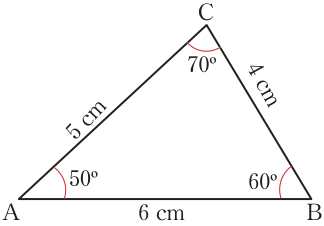
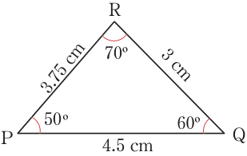

Similar triangles
Triangles are similar when their corresponding angles are equal and their corresponding sides are proportional. Consider the pair of triangles shown in Figure 3.2.
Similarity


Figure 3.2: Similar triangles
From Figure 3.2, CÂB of ΔABC corresponds to RP̂Q of ΔPQR and each measures 50°, AB̂C corresponds to PQ̂R and each measures 60°, and BĈA corresponds to QR̂P and each measures 70°.
Since the corresponding angles are equal, then the two triangles are similar. Also, AB corresponds to PQ, BC corresponds to QR, and CA corresponds to RP. The ratios of the corresponding sides are given by:
Therefore,
Since the corresponding sides are proportional, the two triangles are similar. Therefore, ΔABC is similar to ΔPQR and is denoted by ΔABC ~ ΔPQR. The symbol ~ means “similar to.”
Similar triangles (polygons) are named according to the order of their vertices. For instance, in ΔABC and ΔPQR in Figure 3.2, it can be deduced from the order of the vertices that AB of the first triangle corresponds to PQ of the second triangle. Consequently, BC corresponds to QR, and AC corresponds to PR.